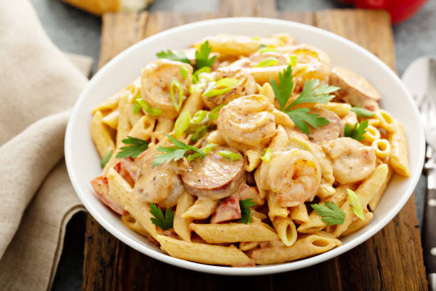

Spicy Cajun Chicken Pasta

Description
Spicy Cajun Chicken Pasta is a flavorful dish that combines Cajun-spiced chicken with creamy pasta sauce.
Ingredients
Cajun Seasoning
- 2tsp Smoked Paprika
- 1tsp Oregano
- 1tsp thyme
- 1/2tsp garlic powder
- 1/2tsp onion powder
- 1/4tsp cayenne pepper
- 1/4tsp salt
Chicken Pasta
- 1 Tbsp Olive oil
- 1 Tbsp butter
- 1lb boneless, skinless chicken breast
- 1 yellow onion, diced
- 1/2 lb. penne pasta
- 15 oz fire roasted diced tomatoes
- 2 cups chicken broth
- 2 oz. cream cheese
- 3 green onions, sliced
Cooking Instructions
-
Combine the ingredients for the Cajun seasoning in a small bowl. Cut the chicken into 1/2 to 3/4-inch cubes. Place the cubed chicken in a bowl, pour the Cajun seasoning over top, and stir to coat the chicken in spices.
-
Add the olive oil and butter to a large deep skillet. Heat the oil and butter over medium-high until the skillet is very hot and the butter is melted and foamy. Add the seasoned chicken to the skillet and cook for a couple minutes on each side, or just until the outside gets some color. The chicken does not need to be cooked through at this point.
-
Add the diced yellow onion to the skillet and continue to sauté for about 2 minutes more, or just until the onion begins to soften. Allow the moisture from the onion to dissolve any browned bits from the bottom of the skillet.
-
Next, add the pasta, fire roasted diced tomatoes (with the juices), and chicken broth to the skillet. Stir just until everything is evenly combined, then place a lid on top and allow the broth to come up to a boil.
-
Once boiling, turn the heat down to medium-low and let the pasta simmer for about ten minutes, stirring every couple of minutes, until the pasta is tender and the liquid is thick and saucy.
-
Add the cream cheese to the skillet in chunks, then stir until it has melted into the sauce. Top the pasta with sliced green onions and serve.
Home Page